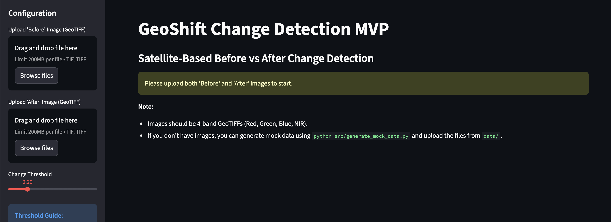
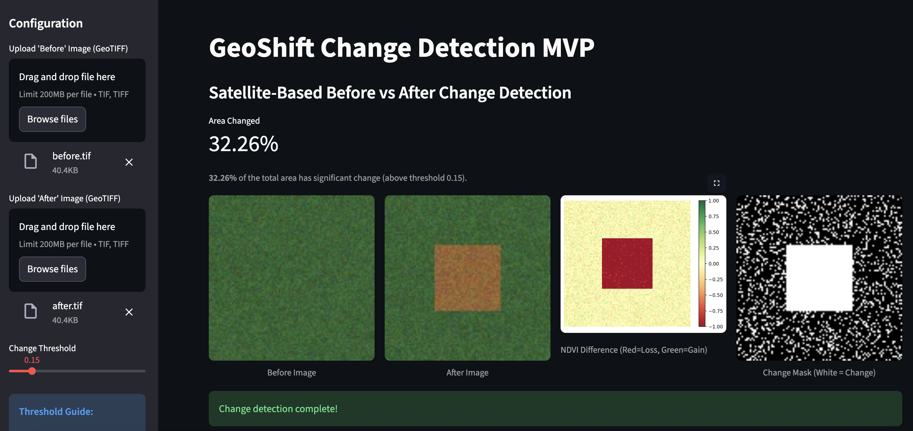
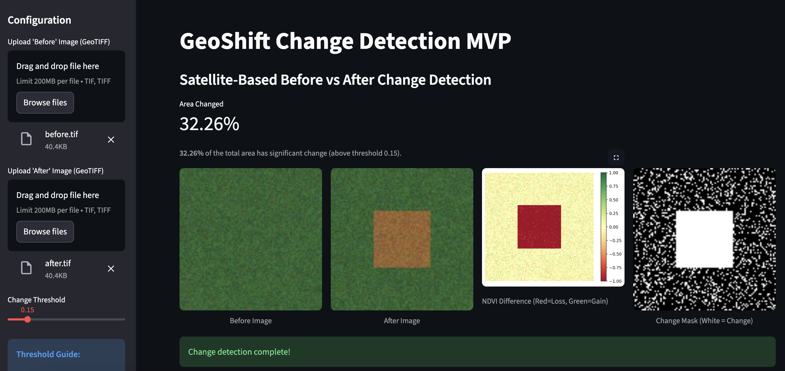

GeoShift Change Detection
Satellite-Based Before vs After Change Detection using Geospatial ML
Overview
GeoShift is an MVP system that detects and visualizes landscape changes using multi-temporal satellite imagery. By comparing “Before vs After” scenes, the system automatically highlights areas that have undergone transformations such as:
✔ Deforestation ✔ New constructions & roads ✔ Water body shrinkage ✔ Urban expansion ✔ Agricultural land-use shift
The project demonstrates remote sensing + machine learning + temporal analysis, making it suitable for environmental monitoring & geospatial AI portfolios.
Streamlit App Demo
Below is the visual interface of the GeoShift app detecting landscape changes using uploaded satellite images:

Home Screen — Upload Before/After imagery
 

Key Features
| Module | Capability |
|---|---|
| Data Acquisition | Upload "Before" and "After" GeoTIFF images |
| Pre-processing | Basic raster alignment (reprojection) |
| Change Detection Engine | Spectral Change Detection (NDVI Differencing) |
| Visualization Layer | Difference Heatmaps + Change Masks + Side-by-Side Comparison |
| Output Metrics | % Area Changed, GeoTIFF Mask Export |
 YouTube Series: Building GeoShift
YouTube Series: Building GeoShift
This repository is accompanied by a YouTube Shorts series titled “Building GeoShift: Geospatial ML Project.”
The objective of the series is to document and explain the complete journey of the GeoShift project in a simple and practical way — covering:
- What GeoShift is and the problem it solves
- Why automated land-change detection is important
- How satellite imagery and machine learning are used
- Technical decisions behind the MVP
- Real-world use cases and future possibilities
The series is designed to break down complex geospatial and AI concepts into short, easy-to-understand 30-second episodes.
Playlist
Channel
📅 New episodes are uploaded every Monday.
Follow along to see how GeoShift evolves from idea to implementation!
Spectral Change Detection (MVP baseline)
- Compute NDVI/NDWI/NBR for both timestamps
- Generate difference raster:
delta = im_after - im_before - Threshold differences to create change mask
- Overlay mask on original scene for visualization
Tech Stack
| Category | Tools |
|---|---|
| Language | Python |
| Geospatial Processing | Rasterio, NumPy |
| ML / CV | OpenCV, Matplotlib |
| Data Source | User Upload / Synthetic Mock Data |
| Visualization | Streamlit |
| Deployment | Local Streamlit Server |
Project Structure
GeoShift-Change-Detection/
│── data/ # input imagery + output masks
│── src/
│ ├── preprocessor.py # image alignment + band extraction
│ ├── differencer.py # NDVI change computation
│ ├── generate_mock_data.py # synthetic data generator
│ ├── debug_ndvi.py # debug script for NDVI values
│ ├── test_differencer.py # unit tests for differencer
│── results/ # heatmaps, overlays, reports
│── app.py # Streamlit frontend
│── requirements.txt # dependencies
│── README.md
How to Run
# 1. Clone the repository
git clone https://github.com/SukritiC/GeoShift-Change-Detection.git
cd GeoShift-Change-Detection
# 2. Install dependencies
pip install -r requirements.txt
# 3. Generate mock data (Optional, for testing)
python src/generate_mock_data.py
# 4. Run the application
streamlit run app.py
License
This documentation and conceptual content are distributed under the Apache License. See the LICENSE file for more information.
Connect with Me
I’m always open to connecting with developers, AI enthusiasts, and innovators working on Generative AI projects. Let’s connect, collaborate, and create impact together!


Let’s exchange ideas on Generative AI and build something extraordinary together. 🌍